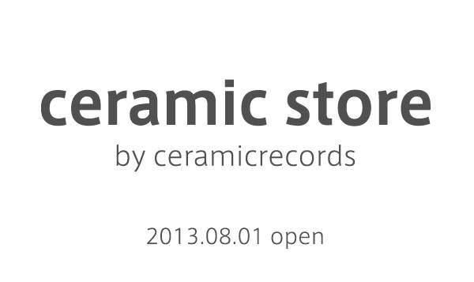
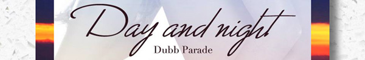

Compilation
20130401
Quarter of Century
20120229
COSMOS / コスモス
Event
20130706
ATTACK FROM THE FAR WEST[終了]
20111023
シガクラスタ！vol.2[終了]
Release
20131206
Fireworks
20131115
Day and night
20131022
Euphoria
20131005
sugar pot - EP
20130922
de facto
20130901
CDFTG2
20130802
flo▲ting delt△s
20130719
リセットボタンの構造
20130609
After Wonder life
セラミックレコーズで公開している作品は
クリエイティブ・コモンズ・ライセンス
の下でライセンスされています。


セラミックレコーズで公開している作品は
クリエイティブ・コモンズ・ライセンス
の下でライセンスされています。